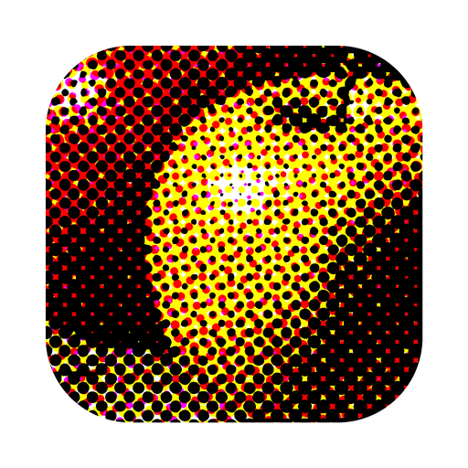

Adjustable screen ruling, output resolution and screen angle. Letterpress halo, per-cell jitter, midtone darkening for dot gain, a tone curve, and a printable-dot range that clamps the highlights and shadows.
Any ink and paper colour, including duotones. Stocks: newsprint, kraft, linen, watercolour, smooth coated, rough uncoated, onion skin, foxed and print-through.
Gamma, brightness, contrast, levels, blur, sharpen, saturation, posterize, vignette, threshold and invert, applied to the source before it is screened.
Imports your own images, exports PNG at full working resolution. Built-in sources: a still life, a shaded sphere, linear and radial gradients, a step wedge and a colour test chart.

Render photos using classic halftone screens. Renders on the GPU, redraws while you drag.
Mac App Store
The historical screens follow the Getty Conservation Institute’s
Atlas of Analytical Signatures of Photographic Processes.
© 2026 Kramden Apps ·
Apps ·
Privacy